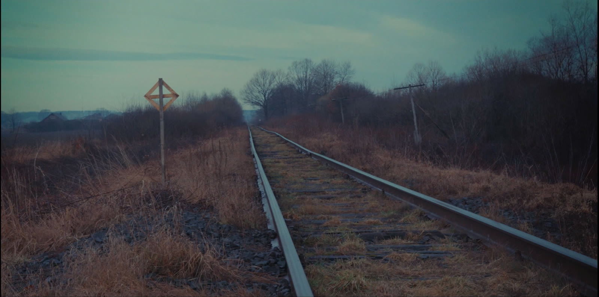
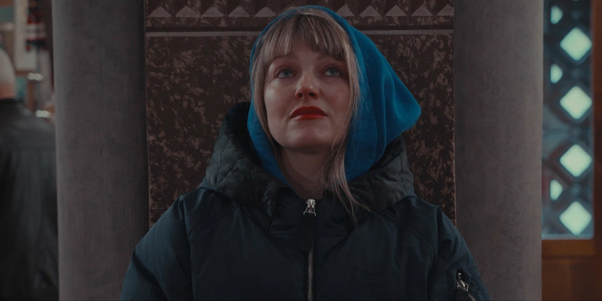
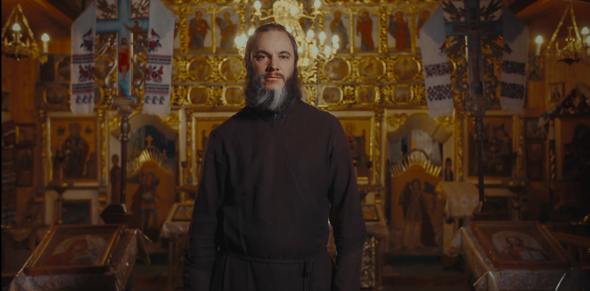

← Tutti i lavori
Hung Land
Un viaggio di sette giorni nei territori ucraini distanti qualche centinaio di chilometri dal fronte.
Ma soprattutto un viaggio tra le vite sospese di chi la guerra la vive da lontano, là dove il tempo è scandito dalle telefonate che arrivano dal fronte, là dove le ore si dilatano nell'attesa che arrivi il momento di ricostruire. Un viaggio tra le parole di coloro che sperano, certo, ma trattenendo il respiro, congelati in quel 24 febbraio 2022, in attesa che la coltre di neve che copre le campagne si sciolga e che torni, un giorno, la primavera.


